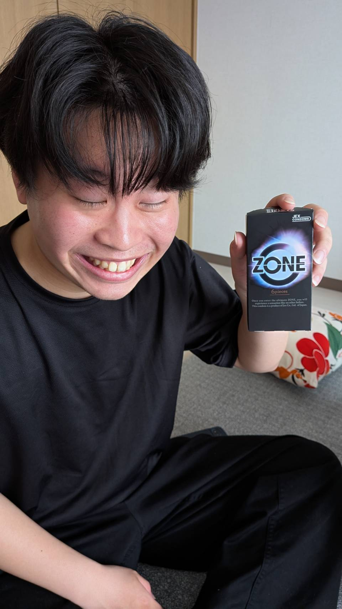

Name:Yamamoto Rento
Hiroshima University
Faculty of Information Science
E-mail: b261361@hiroshima-u.ac.jp
GitHub: rento0321.github.com
広島大学で情報学について学んでいます
趣味 スポーツ観戦、読書
高校時代はバロンドールについての研究結果をアメリカのUCLAで発表、意見交換
サッカー部でアナリストとして活動中、将来的には日本トップのスポーツアナリストととして活動したい